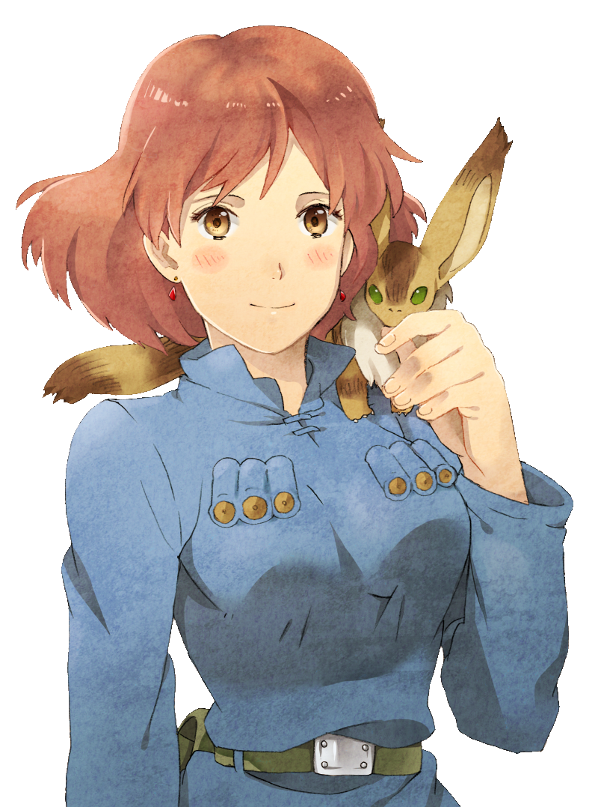
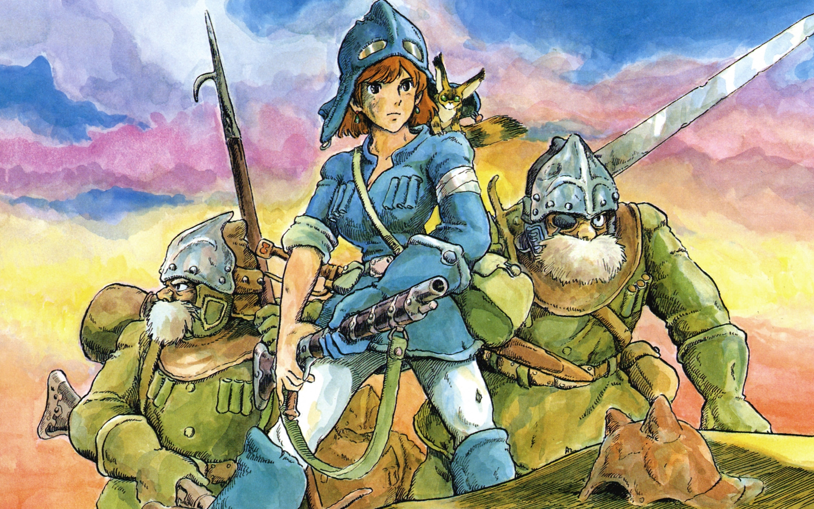
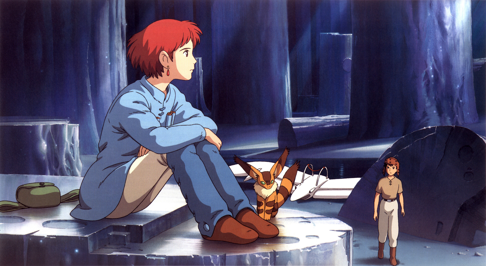
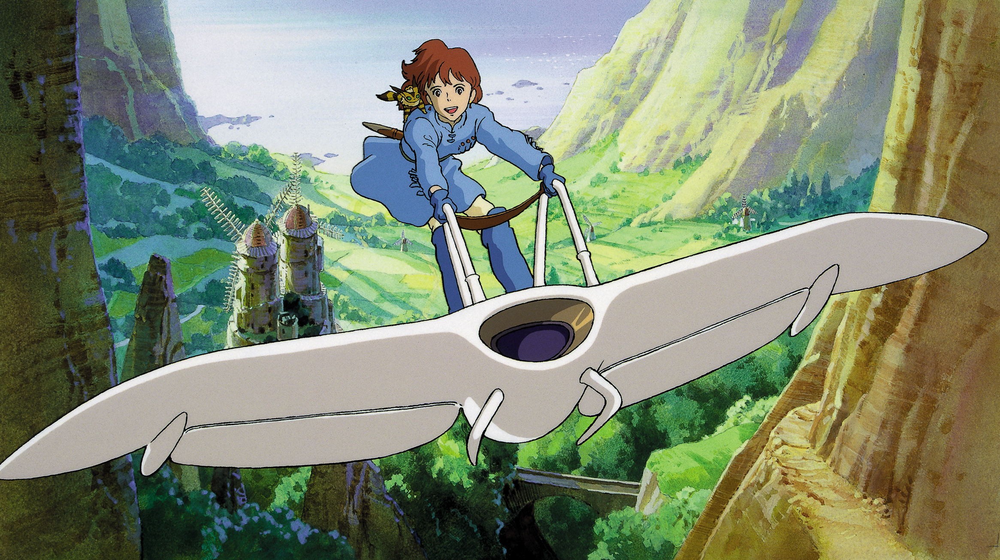

Nausicaä De La Vallée Du Vent
Résumé
Mille ans se sont écoulés depuis la chute de la civilisation industrielle. L'humanité survit tant bien que mal au sein de quelques enclaves menacées par la fukai, gigantesque forêt qui ne cesse de gagner du terrain et dont les spores sont mortelles. Cette jungle épaisse est protégée par des insectes géants qui se sont adaptés à cet environnement. Ces derniers en sont les principaux représentants, par leur taille et leur sensibilité. La Vallée du Vent est un petit royaume agricole, protégé des spores et de la fukai par des vents marins. Sa tranquillité se trouve perturbée par le naufrage d'un immense vaisseau de l'empire tolmèque. Afin de récupérer la cargaison de ce vaisseau, les troupes tolmèques  envahissent la vallée et font prisonnière sa fille Nausicaä. Il s'avère que cette cargaison, si précieuse aux yeux des Tolmèques, est un guerrier géant descendant des colosses ayant anéanti le monde. Les Tolmèques veulent l'utiliser pour brûler la forêt toxique et cela au détriment des peuples voisins à qui ils font la guerre...
Description
- Titre : 風の谷のナウシカ
- Genre : aventure, science-fiction
- Réalisateur : Hayao Miyazaki
- Compositeur : Joe Hisaishi
- Direction d'animation : Kazuo Komatsubara
- Direction artistique : Mitsuki Nakamura
- Studio : Studio Topcraft
- Licence : Buena Vista (fr)
- Durée : 116min
- Sortie : 11 mars 1984 (ja)
- Sortie : 23 août 2006 (fr)
Critique
Scenario : 5/5
Image : 4/5
Personnage : 5/5
Valeur : 5/5
GLOBAL : 5/5
Bande Annonce
Cette bande annonce se fait vieille... Mais la bande son reste intemporelle
Galerie
  